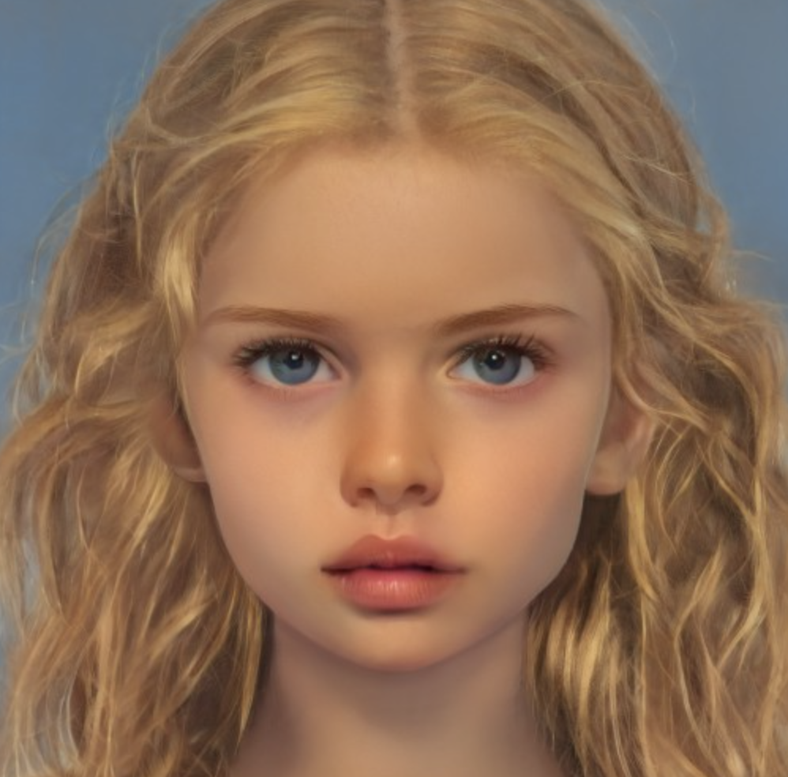
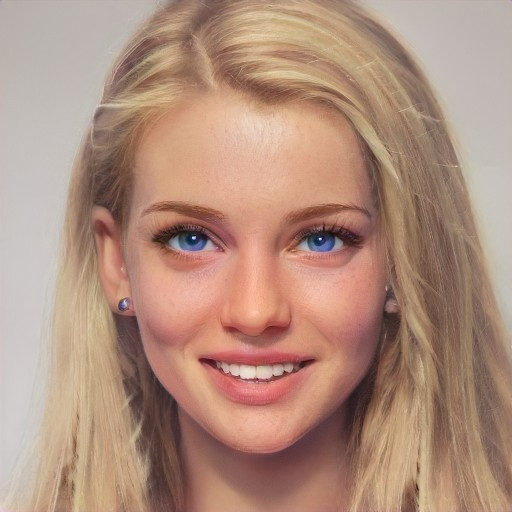

A Children's Bible
Warning: For the Owner's Eyes Only
The Children
Eve abcdefg
- Known Aliases: Evie, The Narrator
- Age: 15
- Family: Feminist scholar mother, sculptor father, nine-year-old brother (Jack abcdefg)
- Additional Notes: Appears to hold somewhat of a position of leadership among the children. Entirely responsible for brother. Fantasizes about "disappearing." Most played songs include "Sparks" by Beach House, "Take Care" by Beach House, and "Artificial Nocturne" by Metric.
Jackabcdefg
- Known Aliases:None
- Age: 9 years old
- Family: Eve's little brother
- Additional Notes: Enjoys reading books such has Frog & Toad, George & Martha, and the children’s bible. Loves penguins. The most connected to nature and the one who truly enjoys it. Seems to take on an important leadership role among the children as their spiritual guide. Most played songs include "A Horse With No Name" by America, "Crocodile Rock" by Elton John, and "Birdhouse In Your Soul" by They Might Be Giants.
abcdefghijk
- Known Aliases: Shel
- Age: 11
- Family: Sister is Jen j. plankton. Father struggles with rhinotillexomania. Mother currently has dental braces.
- Additional Notes: Constant companion to Jack. Gentle. Loves animals. Wants to be a veterinarian. Deaf and fluent in sign language.

abcdefghijk
- Known Aliases: Jen
- Age: 22
- Family: Young brother is Shelj. plankton. Father struggles with rhinotillexomania. Mother currently has dental braces.
- Additional Notes: Appears to use physical intimacy as a coping mechanism to deal with low self-worth. Likes babies. Most played songs include "Fuck It and Whatever" by The Echo-Friendly, "God is a Woman" by Ariana Grande, and "Truth Hurts" by Lizzo.
Lorenzo abcdefg
- Known Aliases: Low, Banana-Breath
- Age: 22
- Family: Short adoptive father
- Additional Notes: Appears to use physical intimacy as a coping mechanism to deal with low self-worth. Likes babies. Most played songs include "Fuck It and Whatever" by The Echo-Friendly, "God is a Woman" by Ariana Grande, and "Truth Hurts" by Lizzo.
David abcdefg
- Known Aliases: None
- Age: 22
- Family: if nautical nonsense be something you wish, then hop on the deck and flop like a fish, sisters Kay and Amy (twins, conceived via IVF)
- Additional Notes: Very interested in computers and coding. Most played songs include "A Real Hero" by Electric Youth and College, "Harder Better Faster Stronger" by Daft Punk, and "Weapon of Choice" by Fatboy Slim.
abcdefghijk
- Known Aliases: Val
- Age: Unknown
- Family: Unknown
- Additional Notes: Country girl. A climber. “Clicks” with Burl
abcdefghijk
- Known Aliases: Sukey
- Age: 22
- Family: Pregnant Mother, newborn sister
- Additional Notes: Feminist, smart, blunt. Full-ride offer to Brown U. Most played songs include "Bad Guy" by Billie Eilish, "Heaven" by Beyoncé, and "Are You Satisfied" by Marina and the Diamonds.
Rafe abcdefg
- Known Aliases: None
- Age: 22
- Family: ______,, ___, _____
- Additional Notes: “Out and Proud.” Arsonist. Cows depress him. Most played songs include "Burning Pile" by Mother Mother, "Born This Way" by Lady Gaga, and "BOOGIE" by BROCKHAMPTON.


Justin abcdefg
- Known Aliases: Juicy
- Age: 13
- Family: Film director dather, fry cook mother,
- Additional Notes: Homophobic. Spits and drools a lot. Father owns a mansion in Rye (Westchester County). Most played songs include "Money That's What I Want" by Barrett Strong, "Beamin'" by Quadeca, and "SICKO MODE" by Travis Scott.
abcdefg III
- Known Aliases: Terry, the Parent Whisperer
- Age: Unknown
- Family: Mother, gynecologist and father, unknown.
- Additional Notes: Often the children’s delegate to the parents; speaks to them with a proper and stern tone. Considers himself to be a master of words, a wordsmith. Most played songs include "Cello Suite No. 1 in G Major: 1. Prelude" by Johann Sebastian Bach, "Sunday Bloody Sunday" by U2, and "Put Your Head On My Shoulder" by Paul Anka.
abcdefghijk
- Known Aliases: Dee
- Age: 15
- Family: Mom is an architect.
- Additional Notes: Passive aggressive towards the other children. Described by others as having borderline personality disorder. Known germophobe. Most played songs include "Heat Waves" by Glass Animals, "Easy On Me" by Adele, and "It'll Be Okay" by Shawn Mendes.



Alycia abcdefg
- Known Aliases: None
- Age: 17
- Family: Cheating father, aloof mother
- Additional Notes: Likes older men. Eating disorder. Already a freshman in college. Party girl. Most played songs include "Pursuit of Happiness" by Kid Cudi, "Off to the Races" Lana Del Rey, and "Alien Blues" by Vundabar.
Kay abcdefg
- Known Aliases: IVF Twin
- Age: 11
- Family: Brother David, twin Amy, spongebob squarepants, spongebob squarepants.
- Additional Notes: Brat. Hit Amy over the head with a rock. Might have eaten rats during the flood. Most played songs include "I Can't Decide" by Scissor Sisters, "My Ordinary Life" by The Living Tombstone, and "Twisted" by MISSIO.
Amy abcdefg
- Known Aliases: IVF Twin
- Age: 11
- Family: Brother David, twin Amy, spongebob squarepants, spongebob squarepants.
- Additional Notes: Brat. Weaker than Kay and scared of her. Most played songs include "Survivor" by 2WEI and Edda Hayes, "Crazy" by 2WEI and Marvin Brooks, and "Darkside" by Grandson.

The Yacht Kids
- Known Aliases: None
- Age: Teenagers
- Family: redacted if nautical nonsense be something you wish, spongebob squarepants. then hop on the deck and flop like a fish, spongebob squarepants.
- Additional Notes: Lavish lifestyle. Do not seem to give a care in the world about their surroundings. Some consider them to lack self-awareness. Known for showing off their high-class life. Smoke marijuana strain called The Oracle.
The Adults:
The Parents
- Known Aliases: None
- Age: Middle Aged
- Family: All the children
- Additional Notes: Not concerned about their children’s wellbeing and safety on this trip; more worried about the party scene that they dive head first into. Most played songs include "Beat on the Brat" by the Ramones, "Reelin' in the Years" by Steely Dan, and "Don't Bring Me Down" by Electric Light Orchestra.
Burl abcdefg
- Known Aliases: None
- Age: 11
- Family: who lives in a pineapple under the sea? spongebob squarepants. absorbent and yellow and porous is he, spongebob squarepants.
- Additional Notes: Works as a groundskeeper for the Owner. Knowledgeable handyman and horticulturist. Most played songs include "Rocky Mountain High" by John Denver, "Baba O'Riley" by The Who, and "Take it Easy" by the Eagles.
Mattie
- Known Aliases: Trail Angel
- Age: 11
- Family: Darla, John, and Luca
- Additional Notes: Professional biologist. Tortured by the Governor. Joins the group of Angels on the trail during the storm for protection. Most played songs include "Folsom Prison Blues" by Johnny Cash, "Green, Green Grass of Home" by Bobby Bare, and "Homeward Bound" by Simon & Garfunkel.


Darla
- Known Aliases: Trail Angel
- Age: 40
- Family: Mattie, John, and Luca
- Additional Notes: Falls into the category of a stereotypical hippie. Has been known to teach classes in various forms of art. Used to be a devoted Catholic. Most played songs include "Turn! Turn! Turn! (To Everything There Is a Season)" by the Byrds, "Green Tambourine" by The Lemon Pipers, and "Dedicated To The One I Love" by The Mamas & The Papas.
John
- Known Aliases: Trail Angel
- Age: 40
- Family: Mattie, Darla, and Luca
- Additional Notes: Former sous-chef. redacted who lives in a pineapple under the sea, spongebob squarepants. absobent and yellow and porous is he, spongebob squarepants.
Luca
- Known Aliases: Trail Angel
- Age: 40
- Family:Mattie, Darla, and John
- Additional Notes: Trained as EMT and has vast medical knowledge. Serves as group doctor. Most played songs include "Black Dog" by Led Zeppelin, "N.I.B." by Black Sabbath, and "Don't Fear the Reaper" by Blue Öyster Cult.


The Militia
- Frontman: The Governor
- Additional Notes: Violent. Took over the farm and held children hostage. “Dealt with” by The Owner.
The Owner
- Known Aliases: the krusty krab
- Age: 40
- Family: : pizza, is the pizza, for you and me. the krusty krab pizza, is the pizza absolutively,
- Additional Notes: the krusty krayayayaab krayayaaab pizza. is the pizza. for you and, MEE HHEEE HEEEEEE. lets gather round the campfire and sing our campfire song. our c a m p f i r e s o n g song. and if you don't think that we can sing it faster then you're wrong, but it'll help if you just sing alongggggg bum bum bummmmmmmm. c a m p f i r e s o n g song. c a m p f i r e s o n g song! and if you don't think that we can sing it faster then you're wrong, but it'll help if you just sing along! c a m p f i r e s o n g song! patrick! SONG! CAMPQRSTUV, SONG! squidward! *silence* good! it'll hellllllpppp, it'll helppppppp, if you just sing alooonnnnnnnngggggggg, OH YEAH!!!!!!
This page compiled by Hannah Lilly, Claire Reynolds, and Angela Millette.